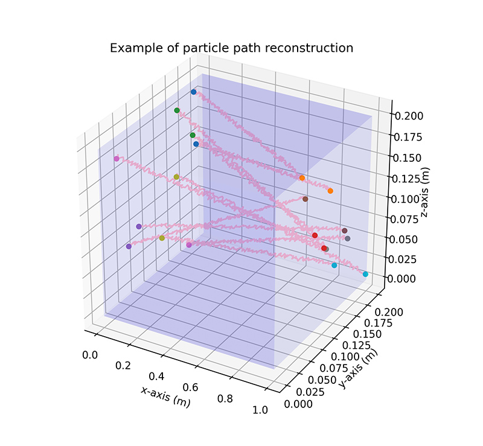

Radioactive Particle Tracking (RPT) is a technique for fluid measurement which uses radiation detectors to determine the position of a radioactive source. A key stage in the deploying of the RPT is the calibration process. The calibration process intends to record the response for a known particle position and a known detector position.
The positioning of the radiation detectors can influence in the particle detection. Some position increases the number of particles detected and others have a contrary effect.
The goal of this work was evaluated which detector array gave the best quality information. To do this, an exploratory data analysis was carried out, and two machine learning algorithms with the same architecture were built and tested.
The best detector array was determined with two metrics Mean Euclidian Distance Error (MEDE). Then, the two best results were tunned the hyper-parameters of the models.
K-Nearest Neighbors Regressor
Feedforward Neural Network
The best detector array was the number 3
The following shows an example of how the particle path is reconstructed.
Pujilí, Cotopaxi, Ecuador
sebitas.alejo@hotmail.com
© Sebastián Sarasti Zambonino. All Rights Reserved.
Designed by HTML Codex
Edited by Sebastián Sarasti and Angel Bastidas